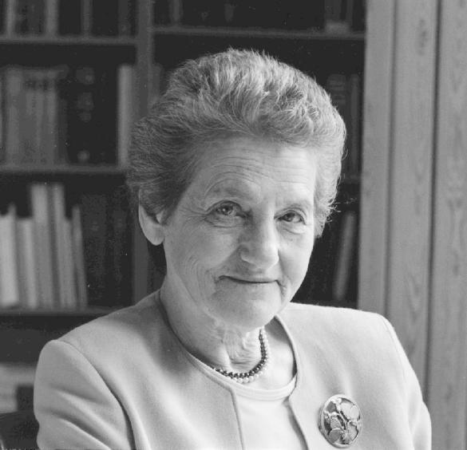

Olga Kennard
Olga Kennard is a crystallographer, Fellow of the Royal Society and former Director of the Cambridge Crystallographic Data Centre. The Olga Kennard Fellowship was established by the Trustees of the Centre to mark her retirement in 1997.

Olga Kennard's scientific career spanned the period from 1946 when structure determinations by X-ray techniques were more of an art than a science to 1997 when such determinations, even for large proteins, became almost routine. After graduating from Newnham College, Cambridge, she started research at the Cavendish Laboratory, with Max Perutz on human haemoglobin. In 1948 she moved to London and worked first at the Vision Research Unit and subsequently at the National Institute for Medical Research. In 1961 she was seconded by the MRC to the Department of Chemistry in Cambridge where over the years she built up the Chemical Crystallography Group to tackle the structure determination of increasingly complex "small" molecules, mainly of biological interest. Her laboratory solved the structures of a variety of steroids, drugs, antibiotics, and eventually the structure of DNA fragments including examples of fragments with base-pair mismatches. In parallel with this, and under the influence of J.D Bernal, she set up the Cambridge Crystallographic Data Centre, (CCDC) aimed at compiling numeric data on crystal structures and developing tools to utilise the recorded information. The CCDC was one of the earliest scientific data bases and its distribution world wide was ensured through National Affiliated Centres, pioneered by Olga Kennard. The importance of the database to industrial, mainly pharmaceutical, companies gave strong support to the expansion of the CCDC and enabled them to move to an award winning, purpose-built building, in 1993. Throughout the years Olga Kennard was involved in utilising the database for a variety of theoretical investigations.
The Olga Kennard Fellowship is open to crystallographers and structural biologists and has a number of features aimed at enabling the holder to combine family responsibilities with continuing scientific career.